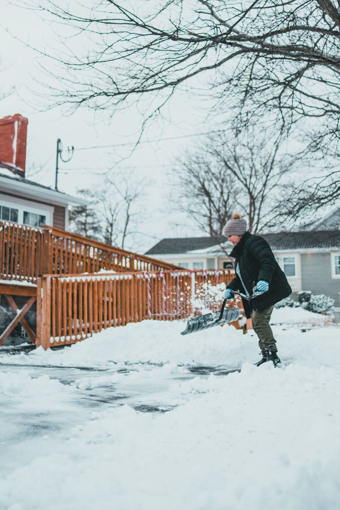
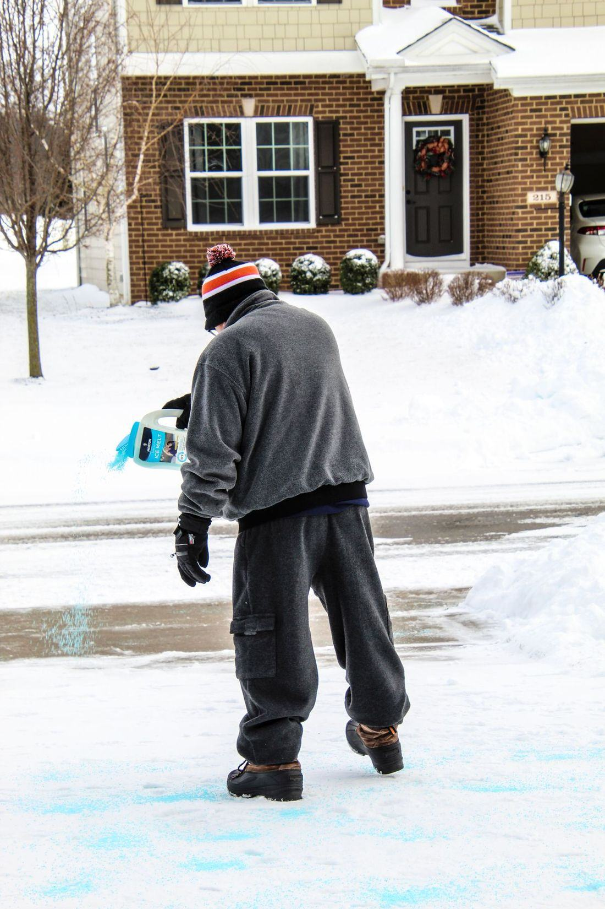
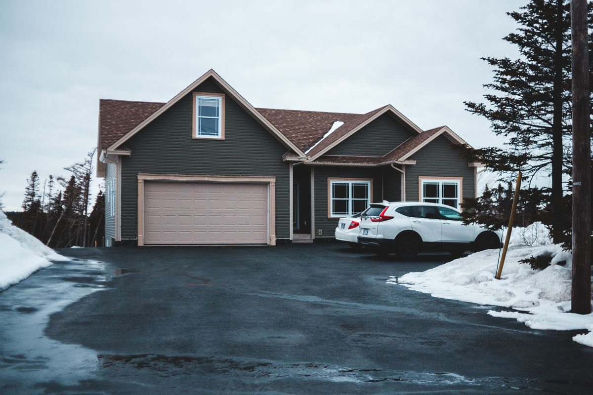

Your driveway, clear before you leave for work.
Seasonal snow plowing for homes around Grand Rapids. We watch the forecast so you don’t have to — when the snow hits the trigger depth, your route is already running.
Serving Grand Rapids, Cohasset, Coleraine & La Prairie
Snow services
Pick a season plan and forget about the snowblower, or call us per visit when a storm catches you short.
Seasonal contracts
One flat price for the whole season. Your driveway is on the route every storm, all winter.
Per-visit plowing
No contract — call or text when you need a single clear-out and we’ll fit you into the next run.
Walkways & steps
Hand shoveling for walkways, steps, and around garage doors the plow can’t reach.
Ice melt application
Salt and ice-melt treatment for slick driveways and entries after freezing rain.
Snow relocation
When the banks get too high, we push back or haul away the piles crowding your driveway.
Vacation coverage
Headed south for a few weeks? We’ll keep the place cleared and looking lived-in.
Why neighbors pick SnowShield
A small local route, run the same way every storm.
On the route
Real stops from a winter route — the work your neighbors will see.



What customers say
Sample reviews shown to demonstrate the layout of a live site.
“First winter in years I haven’t touched a shovel. They’re done before I’m even awake.”
“The photo text after each visit is great. I know the cabin driveway is clear without driving out.”
“Fair season price and they actually answer the phone during a storm.”
About SnowShield
SnowShield Plowing is a locally owned snow service in Grand Rapids, Minnesota. We run a tight route — a limited number of driveways per truck — so every stop gets done on time, every storm. Seasonal customers are booked before the snow flies; the route opens each fall and closes when it’s full.
Request service
Tell us where the driveway is and what you need. On a live site, this form lands straight in the business’s office — no lost sticky notes.